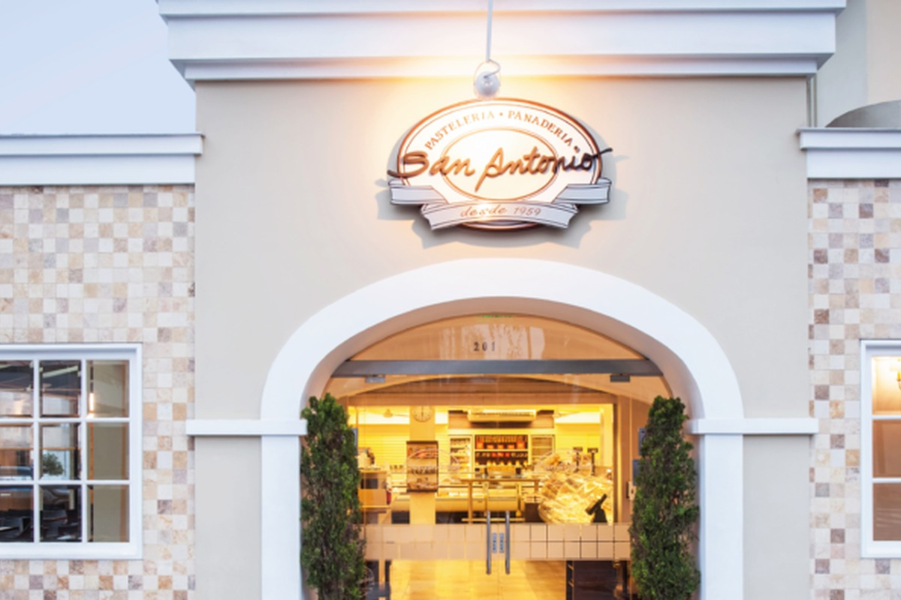
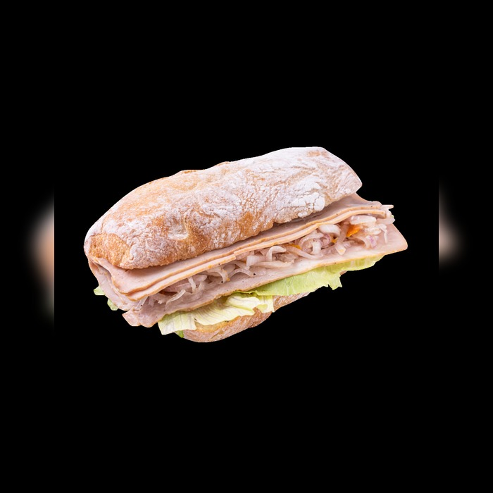
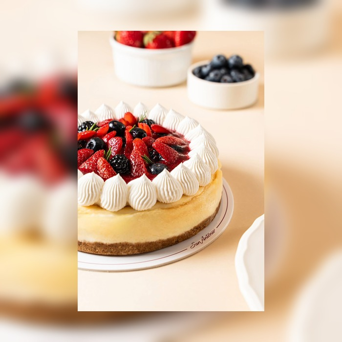
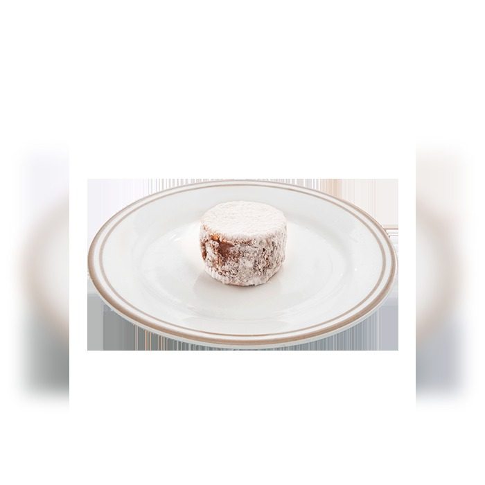
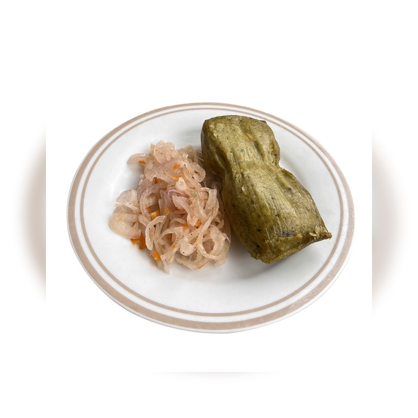

Delivery Express
Pedidos para el mismo día mediante el canal de compra online de San Antonio, con una amplia selección de productos de su carta.

Pastelería San Antonio abrió sus puertas en 1959. Don Pepe y Don Emilio, junto con un equipo de maestros artesanos peruanos, dieron inicio a una historia que se mantiene ligada a la elaboración de productos de panadería y pastelería.
Actualmente su propuesta se amplía a cafetería y restaurante, con productos para desayunos, sándwiches, postres, empanadas, bowls, bebidas y otras alternativas disponibles en sus locales y canales de pedido.
La marca también ofrece pedidos para el mismo día, pedidos programados y atención corporativa para reuniones y eventos.
Visitar sitio oficialPedidos para el mismo día mediante el canal de compra online de San Antonio, con una amplia selección de productos de su carta.
Una modalidad pensada para organizar pedidos con anticipación, ideal para tortas, bocaditos, reuniones y fechas especiales.
Atención para empresas, reuniones y eventos mediante un canal dedicado que ayuda a coordinar pedidos de mayor volumen.
Revisa la carta digital, realiza un pedido para hoy o programa con anticipación productos para una reunión, celebración o evento. San Antonio ofrece distintos canales según lo que necesites.
Pedir ahora
Jamón del país y salsa criolla

Un postre entero para compartir

Manjarblanco y azúcar impalpable

Un clásico para el desayuno